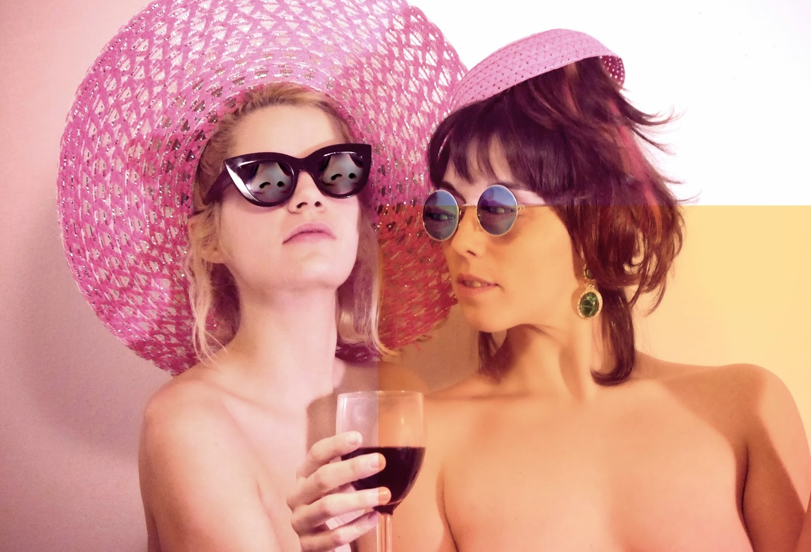

'
¿Os molesta que muchos no vean eso precisamente? Alba.
Nos jode hasta cierto punto porque somos las primeras que nos reímos de nosotras mismas al subir a un escenario. Decimos cosas que en realidad nos importan, pero de una manera graciosa y bailable que se puede quedar en el subconsciente mucho mejor que con un libro teórico.
Os han encasquetado la etiqueta musical del electro-disgusting. ¿De qué trata eso exactamente
Carla: Es un buen invento: crítica, concepto y muerte a la verdad. Así nos ha definido mucha gente. No lo habíamos pensado, pero nosotras escuchábamos Putilatex y grupos similares, así que -quieras o no- esas cosas siempre te acaban influenciando.
Alba: A pesar de ello, cada canción tiene una madre y un padre. Nos dicen eso quizás por la actitud que tenemos, pero detrás de nosotras hay gente que trabaja duro y hace que todo esto sea profesional también. Las letras pueden parecer de broma, pero trabajamos en ellas.
Carla: Además nosotras nos queremos mover entre lo noble y lo vulgar. Coger la historia del arte y reinterpretarla a nuestra manera, por ejemplo, y el electroclash era mucho más 'destroyer'.
¿Por qué creéis que ha gustado tanto Historia del Arte?
Alba: Yo creo que el punto de inflexión, sobre todo, fue el vídeo de la canción. Cuando le pones algo visual a un concepto que puede gustar, la gente se siente identificada. Muchos que estudian Bellas Artes o Historia del Arte supongo que dijeron: "Mira cómo se ríen de lo que tenemos que estudiar".
Yo trabajé en el MACBA unos años y vayas donde vayas siempre hay los mismos artistas. Vale, a las dos nos encanta Picasso, pero oye, ¡qué pesados! Siempre se habla de los mismos. ¿Os ha sorprendido toda la repercusión?
Carla:No nos esperábamos esto, la verdad. El otro día vimos a la presentadora de Masterchef (Eva González), que hasta ha hecho un baile de Historia del Arte. A nosotras lo que nos gusta es que la gente baile cultura en las discotecas.
Alba: Ponle una buena base a un poema y ya verás cómo se queda en el subconsciente. Así es como la cultura va prevaleciendo.
Llegados a este punto, ¿a dónde quieren llegar Las Bistecs?
Alba: A incendiar un museo o ensuciar el MACBA.
Carla: Sí, queremos ensuciar sitios que no nos dejan. Las discotecas nos encantan, pero como siguiente paso sería interesante poder actuar en una institución cultural como un museo.
Vuestra actuación en el programa Alaska y Segura fue muy sonada. ¿Cómo surgió todo aquello?
Carla: Alaska nos dijo que fue ella la que nos propuso después de ver uno de nuestros vídeos.
Alba: Yo estaba en el trabajo y, cuando me llegó el mail, llamé a Carla súper emocionada. Para nosotras ella es un referente y fue una experiencia fantástica.
¿Os consideráis 'divas gays'?
Carla:Totalmente: sin ellos no somos nada. El público gay siempre está mucho más abierto a nuevas propuestas y a cosas más extremas que sirven para bailar y reírse al mismo tiempo. No tienen ningún problema en disfrutar de cosas más frívolas.
Alba:Tampoco queremos marcar diferencias, pero ellos son capaces de aceptar idea alocadas como ésta y olvidarse de la connotación sexual de nuestra ropa. Cuando actuamos en Moià y nos vieron enfundadas en nuestros bodys, la gente se escandalizó. Mi abuela no, pero no entendía de qué iba todo esto.
¿Diríais que algunos os ven como unas 'mamarrachas'?
Alba:Que nos digan 'mamarrachas' a mí me parece correcto. Los 'haters' nos dan mucho juego y nos aportan otro punto de vista que nos gusta.
Carla:De hecho, las críticas nos gustan mucho. Hay gente muy ingeniosa.
¿Qué os parecería participar en Eurovisión?
Alba:¡Sería muy divertido quedar las últimas!
¿Va a haber vídeo de vuestro último tema, Universio?
Carla:Ya está grabado. Para finales de noviembre tenemos previsto que salga.
¿Qué prendas no pueden faltar en el fondo de armario de Las Bistecs?
Carlia: Un mono dorado y plateado; unos buenos tacones y el Guapabox, que es una caja donde metemos todo el maquillaje que compramos en el chino. Con eso nos basta.
¿Os gustaría sacar un disco?
Carla:Vamos a hacerlo, aunque no sabemos cuándo. Queremos que se llame Dramita y pensamos que sería bueno lanzarlo a principios de 2016.
¿Qué planes tenéis para el futuro?
Carla: Nos gustaría viajar mucho y recopilar mil anécdotas. Sin ir más lejos, este diciembre nos vamos a México unos 20 días a actuar en el DF, Guadalajara y Acapulco.
Alba: También estaría bien tocar en Rusia, que seguro que nos entenderían muy bien.